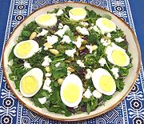

|
Watercress & Herb SaladJerusalem / England / California | ||||
| Serves: Effort: Sched: DoAhead: |
4 salad ** 35 min Most |
A little fancy, but very tasty and worth the effort. The pattern recipe was composed by two guys from Jerusalem - to serve in their restaurants in England. | |||
|
4 8 1 1 1 2 ------ 1-1/2 1/2 1-1/2 2 tt ------ 1 1/4 2 1/2 1/4 |
lrg oz c c c oz ---- T T T t ---- cl c T t t |
Eggs Watercress Dill Basil Leaves Cilantro Feta Cheese (1) -- Seed Mix Almonds, raw Coriander seed Pumpkin seed Sesame seed Chili Flake (2) -- Dressing Garlic Olive Oil, ExtV Lemon Juice Salt Pepper |
Jerusalem, England, and I've made a few adaptions here in California, so this is now sort of a salad without a country. Do-Ahead: - (25 min + chill - 6 min work)
|